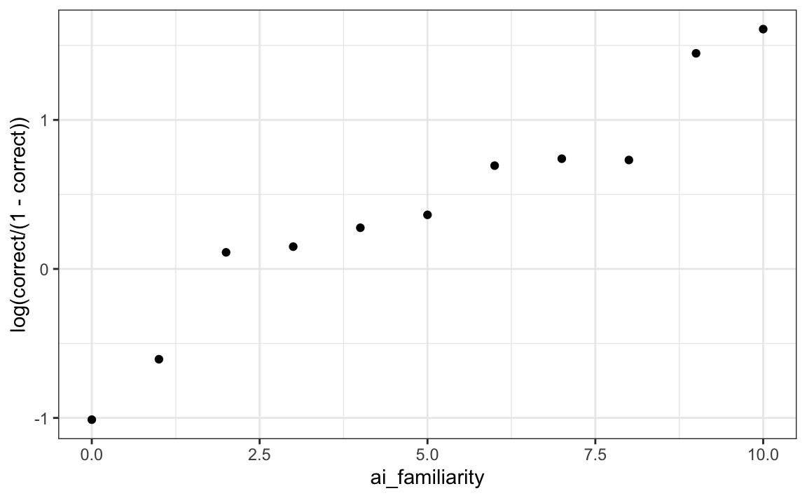
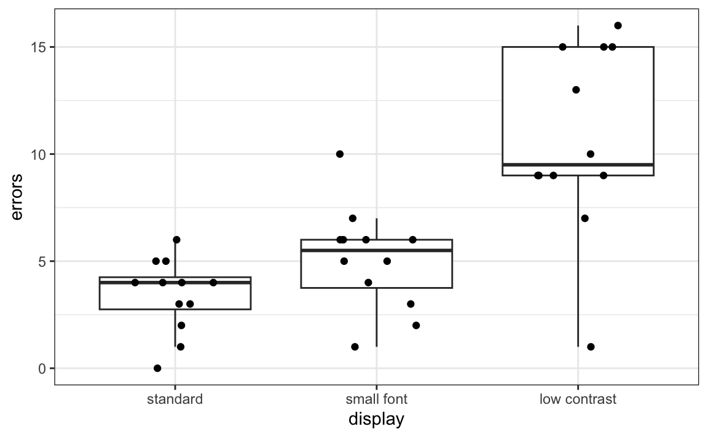

library(tidyverse)
library(behdslabs)
totals <- tech_grant_funding_gender_gap |> select(-tech_domain) |>
summarize_all(sum) |>
summarize(yes_men = awards_men,
no_men = applications_men - awards_men,
yes_women = awards_women,
no_women = applications_women - awards_women)
totals |> summarize(percent_men = yes_men/(yes_men + no_men),
percent_women = yes_women/(yes_women + no_women))
#> percent_men percent_women
#> 1 0.177 0.14928 Generalized Linear Models
Original chapter by Rafael A. Irizarry, from Introduction to Data Science. Adapted by Giorgio Arcara: the datasets are replaced with behavioural ones; new sections One row per participant and Several predictors; some passages are rephrased or shortened; the text is otherwise Irizarry’s. Details in the CHANGELOG.
The statistical models we have used so far assume that the outcome of interest is continuous. However, in many real applications, the outcomes are binary, categorical, or counts. In these settings, we are often interested in how the outcome changes with one or more explanatory variables.
For example, we may want to study how the probability of telling a real photograph from an AI-generated image correctly depends on time pressure or on familiarity with AI tools; how the chance that a grant application is funded depends on the gender of the applicant; or how the number of errors made in a proofreading task changes with the way the text is displayed.
Although these outcomes are no longer continuous, many of the ideas introduced in the linear model framework continue to apply. With a small adaptation, we can extend the mathematical approach used for linear models so that it can be applied in all of these situations, while also continuing to use the same modeling tools in R.
These extended models are known as generalized linear models. To motivate them, we begin this chapter with association tests for two categorical variables. We then show how these tests arise naturally from logistic regression, our first example of a generalized linear model for binary outcomes. We conclude with examples that illustrate how the same framework can be applied across a range of contexts, including outcomes that are binary or counts.
28.1 Association Tests
We start with the simplest case: assessing whether two categorical variables are associated. The Chi-square test was introduced in Chapter 21, with the same grant data we use below; here we revisit it briefly, together with Fisher’s exact test, because it leads naturally to logistic regression. These methods were developed before GLMs, but they can be understood as special cases of logistic regression. Once we establish this connection, the general GLM framework will follow naturally.
Case study: Funding success rates
Is there a gender gap in research funding? A 2015 PNAS paper1 analysed the success rates of grant applications in the Netherlands and concluded that its
results reveal gender bias favoring male applicants over female applicants in the prioritization of their “quality of researcher” (but not “quality of proposal”) evaluations and success rates, as well as in the language use in instructional and evaluation materials.
The tech_grant_funding_gender_gap dataset in behdslabs has the same structure: for nine technology domains, from AI research to UX and behavioural research, it records how many grant applications men and women submitted and how many were funded. The main evidence for a gender gap is a comparison of the percentages funded:
But could this be due just to random variability? Here, we learn how to perform inference for this type of data.
In Section 28.1.3, we introduce association tests that permit us to answer this question. Before doing so, we present a historically important example that illustrates the need for such methods.
The Lady Tasting Tea
The classic motivating example for association tests is the Lady Tasting Tea experiment designed by R. A. Fisher. A colleague at the Rothamsted Experimental Station claimed she could tell whether milk was poured into a cup before or after the tea. Fisher proposed a randomized test and derived the probability of each possible result under the assumption that she was simply guessing. This led to what is now known as Fisher’s exact test.
As an example, suppose she correctly identified 3 out of 4 cups:
tab <- table(guess = c("m", "t", "m", "t", "t", "m", "t", "m"),
actual = c("m", "t", "m", "t", "t", "t", "m", "m"))
tab
#> actual
#> guess m t
#> m 3 1
#> t 1 3To evaluate whether this provides evidence of real ability, we consider the null hypothesis that she is guessing. Because she knows there are four of each type, guessing corresponds to randomly drawing 4 cups from an urn containing 4 milk-first and 4 tea-first cups. Using basic combinatorics, covered in most discrete probability textbooks, we can compute the probability of correctly identifying \(k\) cups out of 4 by chance. Under random guessing, this probability is
\[ \frac{\binom{4}{k}\binom{4}{4-k}}{\binom{8}{4}}. \]
To assess how surprising the result is, we compute the probability of getting 3 or more correct by chance:
\[ \frac{\binom{4}{3}\binom{4}{1}}{\binom{8}{4}} + \frac{\binom{4}{4}\binom{4}{0}}{\binom{8}{4}} = \frac{16}{70} \approx 0.24. \]
This shows that correctly identifying 3 cups could easily occur by chance and does not provide strong evidence for the claimed ability.
This calculation is exactly what Fisher’s exact test performs. In R, we can compute the corresponding p-value with:
fisher.test(tab, alternative = "greater")$p.value
#> [1] 0.243Historical accounts suggest that the lady did perform well in the original demonstration. Fisher’s goal was not to confirm or refute her ability, but to illustrate how to design a fair experiment and evaluate evidence with probability.
Two-by-two tables and the Chi-square test
Notice that our funding example is analogous to the Lady Tasting Tea: under the null hypothesis, funding is assigned at random regardless of gender, just as in Fisher’s example, cups are guessed at random regardless of when the milk was poured.
However, in the Lady Tasting Tea example, we were able to use the hypergeometric distribution because the design fixed both the number of cups of each type and the number of selections for each category. In other words, the row totals and the column totals of tab were predetermined by the experiment.
In the funding example, and in most real-world data, this is not the case. Neither the number of funded applications nor the number of male and female applicants is fixed in advance; these totals arise from the data we observe. Because the row and column totals are not fixed, the hypergeometric model is no longer appropriate and rarely used in practice.
In such settings, we instead use the Chi-squared test, which provides a way to test for association between two categorical variables without requiring fixed margins. Let’s apply it to the funding rates example.
The first step in a Chi-squared test is to create the observed two-by-two table:
o <- with(totals, data.frame(men = c(no_men, yes_men),
women = c(no_women, yes_women),
row.names = c("no", "yes")))We then estimate the overall funding rate, which we will use to determine what we expect to see if successful funding was assigned independent of gender:
r <- with(totals, (yes_men + yes_women))/sum(totals)We use this to compute what we expect to see by chance:
e <- with(totals, data.frame(men = (no_men + yes_men)*c(1 - r, r),
women = (no_women + yes_women)*c(1 - r, r),
row.names = c("no", "yes")))We can see that more men than expected and fewer women than expected received funding:
cbind(o, e) %>%
set_names(c(
paste("obs", colnames(o)),
paste("expected", colnames(e))
))
#> obs men obs women expected men expected women
#> no 2690 2022 2729 1983
#> yes 580 354 541 393However, under the null hypothesis, these observations are random variables. The Chi-square statistic quantifies how much the observed tables deviates from the expected by:
- Taking the difference between each observed and expected cell value.
- Squaring this difference.
- Dividing each squared difference by the expected value.
- Summing all these values together to get the final statistic.
sum((o - e)^2/e)
#> [1] 8.03We use this summary statistic because its sampling distribution can be approximated by a known parametric distribution: the Chi-square distribution.
The R function chisq.test takes a two-by-two table and returns the results from the test:
chisq_test <- chisq.test(o, correct = FALSE)We see that the p-value is 0.0046:
chisq_test$p.value
#> [1] 0.00461By default, the chisq.test function applies a continuity correction. This correction subtracts 0.5 from the absolute deviation between observed and expected counts:
sum((abs(o - e) - 0.5)^2 / e)
#> [1] 7.82and this matches the default behavior of:
chisq.test(o)$statistic
#> X-squared
#> 7.82The reason for this adjustment is that the chi-square test is based on a continuous probability distribution, while the two-by-two table counts are discrete. When sample sizes are small, the difference between a continuous approximation and the discrete distribution can be noticeable. The continuity correction slightly reduces the test statistic to account for this mismatch, making the approximation more conservative (that is, less likely to produce small p-values by chance).
We previously used the argument correct = FALSE to avoid this adjustment because, in moderate-to-large samples, the correction is not needed and can slightly reduce the test’s power.
Odds ratios
The Chi-square test provides a p-value, but it does not quantify the size of the effect. As discussed in Chapter 16, we generally prefer confidence intervals over p-values because they communicate effect size and uncertainty. So how do we quantify the effect here?
For two categorical groups, our data can be summarized in a two-by-two table:
| Women | Men | |
|---|---|---|
| Awarded | a | b |
| Not Awarded | c | d |
One option is to compare the difference in proportions:
\[ \frac{a}{a+c} - \frac{b}{b+d}. \]
However, differences in proportions are not directly comparable across baseline levels. For example, a change from 1% to 2% is just as large on the probability scale as a change from 49% to 50%, yet the practical interpretation is very different.
For this reason, a more common way to quantify association in our context is the odds ratio:
\[ \text{odds ratio} = \frac{a/c}{b/d} = \frac{ad}{bc} \] This quantity compares the odds of being funded for women to the odds of being funded for men.
The log odds ratio is often used because it is symmetric around 0:
\[ \log\left(\frac{ad}{bc}\right) = 0 \quad \text{when there is no difference between groups.} \]
Moreover, the log odds ratio has a convenient approximate standard error:
\[ \mathrm{SE}\left[\log\left(\frac{ad}{bc}\right)\right] \approx\sqrt{\frac{1}{a} + \frac{1}{b} + \frac{1}{c} + \frac{1}{d}}. \]
and can be shown to be asymptotically normal. This allows us to construct confidence intervals. A 95% confidence interval would be:
\[ \log\left(\frac{ad}{bc}\right) \pm 1.96 \sqrt{\frac{1}{a} + \frac{1}{b} + \frac{1}{c} + \frac{1}{d}} \] Once we construct a confidence interval for the log odds ratio, we can obtain a confidence interval for the odds ratio by exponentiating the two endpoints.
Here, we compute the odds ratio for our funding data and construct a 95% confidence interval:
or <- o[1,1]*o[2,2]/(o[2,1]*o[1,2])
se <- sqrt(sum(1/o))
exp(log(or) + c(-1,1) * qnorm(0.975) * se)
#> [1] 0.703 0.938This allows us to assess both the magnitude of the association and the uncertainty around it. The estimated odds ratio is less than 1, indicating that women have lower odds of being funded than men in this dataset. The 95% confidence interval does not include 1, which implies the p-value is less than 0.05.
The log odds ratio is not defined if any of the cells of the two-by-two table are 0. This is because if \(a\), \(b\), \(c\), or \(d\) are 0, the \(\log(\frac{ad}{bc})\) is either the log of 0 or has a 0 in the denominator. For this situation, it is common practice to avoid 0s by adding 0.5 to each cell. This is referred to as the Haldane-Anscombe correction and has been shown, both in practice and theory, to work well.
28.2 Logistic regression
We now connect the association tests described above to the linear model framework introduced in Chapter 27. Once we make this connection, the same ideas extend naturally to more complex settings, including models with continuous predictors and multiple explanatory variables.
If we define \(Y_i\) to be 1 if application \(i\) was funded and 0 otherwise, and set \(x_i = 1\) for women and \(x_i = 0\) for men, we might be tempted to write a linear model:
\[ Y_i = \beta_0 + \beta_1 x_i + \varepsilon_i. \]
However, this model is not appropriate because the left-hand side only takes values 0 or 1, while the right-hand side can take any real value. In particular, the implied expected value
\[ \mathrm{E}[Y_i] = \Pr(Y_1=1) = \beta_0 + \beta_1 x_i \]
could be less than 0 or greater than 1, which is not possible for a probability.
If we instead model the log odds as a linear function of \(x_i\)
\[ \log\left\{\frac{\Pr(Y_i=1)}{1 - \Pr(Y_i=1)}\right\}= \beta_0 + \beta_1 x_i. \]
we get the following useful interpretation of the parameters:
- \(e^{\beta_0}\) is the odds of funding for men,
- \(e^{\beta_0} e^{\beta_1}\) is the odds of funding for women.
- \(e^{\beta_1}\) is the odds ratio comparing women to men.
The parameter \(\beta_1\) is thus the log odds ratio.
The name logistic regression comes from the fact that
\[ g(p) = \log\frac{p}{1-p} \] is called the logistic function or logit transformation.
Note that we can write the probability \(p_i = Pr(Y_i = 1)\) as a function of the parameters \(\beta_0+\beta_1x_i\) for any \(x_i\) by using the inverse of the logit transformation:
\[ \Pr(Y_i=1) = g^{-1}(g(p_i)) = g^{-1}\left(\beta_0+\beta_1x_i\right) = \frac{e^{\beta_0+\beta_1x_i}}{1 + e^{\beta_0+\beta_1x_i}} = \frac{1}{1 + e^{-\beta_0-\beta_1x_i}} \]
Estimation
Unlike linear regression, least squares is not optimal here because the variance of the outcome depends on its mean, and the model for the expected value is nonlinear. Instead, the parameters are estimated using maximum likelihood estimation (MLE). The basic idea of MLE is to choose the parameter values that make the observed data most probable according to the assumed statistical model. For logistic regression, this means finding the values of \(\beta_0\) and \(\beta_1\) that maximize the probability of observing the particular pattern of zeros and ones in the data.
Our example, analyzing a two-by-two table, is a special case in which the estimates can be written directly as functions of the observed proportions. But in general, for logistic regression models, the estimates cannot be written in a simple closed-form expression. Instead, numerical optimization algorithms are used to find the values that maximize the likelihood. Under standard conditions, a version of the central limit theorem applies to these estimates. This implies that for large sample sizes, the estimates are approximately normally distributed and that their standard errors can be computed from the curvature of the likelihood function near the maximum. This, in turn, permits the construction of confidence intervals and hypothesis tests.
Readers interested in a deeper and more general treatment of MLE and logistic regression can consult the Recommended Reading section, where we point to textbooks that develop the likelihood framework, the asymptotic results, and the numerical algorithms in more detail.
Fitting the model in R
We can fit the logistic regression model in R using the glm function with family = binomial.
Although we do not have a record for each application, we do have totals for each group. This is sufficient because the sum of the outcomes for men is a binomial random variable with \(N_0\) trials (the number of applications by men) and success probability \(p_0\), which satisfies
\[ \log\left(\frac{p_0}{1-p_0}\right) = \beta_0. \]
Similarly, the sum of outcomes for women is binomial with \(N_1\) trials and success probability \(p_1\), where
\[ \log\left(\frac{p_1}{1-p_1}\right) = \beta_0 + \beta_1. \]
The glm function can work directly with grouped counts by using a two-column matrix of successes and failures:
success <- with(totals, c(yes_men, yes_women))
failure <- with(totals, c(no_men, no_women))
y <- cbind(success, failure)and encoding the group indicator:
x <- factor(c("men", "women"))We then fit the model with glm:
fit <- glm(y ~ x, family = binomial)
coefficients(summary(fit))
#> Estimate Std. Error z value Pr(>|z|)
#> (Intercept) -1.534 0.0458 -33.51 3.08e-246
#> xwomen -0.208 0.0736 -2.83 4.65e-03To obtain the estimated odds ratio, we exponentiate the coefficient:
exp(fit$coef[2])
#> xwomen
#> 0.812This value represents the multiplicative change in the odds of being funded for women compared to men.
A 95% confidence interval for this odds ratio is obtained by exponentiating the corresponding confidence interval for \(\beta_1\):
exp(confint(fit, 2))
#> 2.5 % 97.5 %
#> 0.702 0.937This interval provides both an effect size and a measure of uncertainty.
Relation to earlier methods
We can confirm that logistic regression yields the same odds ratio estimate as a calculation from the simple two-by-two table (saved in o):
or <- o[1,1]*o[2,2]/(o[2,1]*o[1,2])
se <- sqrt(sum(1/o))
c(log(or),se)
#> [1] -0.2083 0.0736
c(tidy(fit)$estimate[2], tidy(fit)$std.error[2])
#> [1] -0.2083 0.0736The p-values obtained from chisq.test and from logistic regression
chisq.test(o, correct = FALSE)$p.value
#> [1] 0.00461
tidy(fit)$p.value[2]
#> [1] 0.00465differ slightly because they are based on different approximations.
One row per participant
Draft
This subsection and Several predictors below were written for this book on 23 November 2026, and are not yet reviewed by the instructor.
In behavioural data we usually have one row per participant, or per trial, with the outcome coded as 0 or 1, rather than totals for each group. The real_or_ai dataset in behdslabs is an example. In a simulated online experiment, each of 600 participants saw one image and judged whether it was a real photograph or generated by AI. Half of the participants, chosen at random, had to answer within three seconds (time_pressure); half saw a photo-like image and half an illustration (image_type), also at random; and each participant rated their familiarity with generative AI tools from 0 to 10 (ai_familiarity). The outcome, correct, is 1 if the judgement was right:
head(real_or_ai)
#> id ai_familiarity image_type time_pressure correct
#> 1 1 3 illustration yes 0
#> 2 2 3 illustration yes 1
#> 3 3 4 illustration no 1
#> 4 4 7 illustration no 1
#> 5 5 9 illustration no 1
#> 6 6 7 illustration yes 0Each participant gives a single judgement, so the observations are independent, as the model assumes. We can tabulate the outcome by time pressure:
with(real_or_ai, table(time_pressure, correct))
#> correct
#> time_pressure 0 1
#> no 76 224
#> yes 162 138This is again a two-by-two table, but glm does not need it: we can give it the 0/1 outcome directly, with the same formula syntax as lm:
fit_pressure <- glm(correct ~ time_pressure, family = binomial, data = real_or_ai)
summary(fit_pressure)
#>
#> Call:
#> glm(formula = correct ~ time_pressure, family = binomial, data = real_or_ai)
#>
#> Coefficients:
#> Estimate Std. Error z value Pr(>|z|)
#> (Intercept) 1.081 0.133 8.14 3.9e-16 ***
#> time_pressureyes -1.241 0.176 -7.05 1.9e-12 ***
#> ---
#> Signif. codes: 0 '***' 0.001 '**' 0.01 '*' 0.05 '.' 0.1 ' ' 1
#>
#> (Dispersion parameter for binomial family taken to be 1)
#>
#> Null deviance: 805.96 on 599 degrees of freedom
#> Residual deviance: 753.55 on 598 degrees of freedom
#> AIC: 757.5
#>
#> Number of Fisher Scoring iterations: 4The output has the same layout as summary(lm()), with two differences. The estimates are on the log-odds scale, and the tests use a \(z\) statistic instead of a \(t\) statistic, because they rely on the normal approximation for maximum likelihood estimates described above. To read the effect of time pressure, we exponentiate the estimate and its confidence interval:
exp(coef(fit_pressure))
#> (Intercept) time_pressureyes
#> 2.947 0.289
exp(confint(fit_pressure))
#> 2.5 % 97.5 %
#> (Intercept) 2.284 3.846
#> time_pressureyes 0.204 0.407The intercept, 2.95, is the odds of a correct answer without time pressure, the reference level: about 3 correct answers for each wrong one. The odds ratio for time_pressureyes, 0.29, says that time pressure multiplies these odds by about 0.29, with a 95% confidence interval from 0.2 to 0.41. Because time pressure was assigned at random, we can read this as the effect of time pressure on accuracy (see Random assignment in Chapter 4).
28.3 Generalizing the model
At first glance, logistic regression may seem like an unnecessarily complicated way to obtain the same results we derived using the odds ratio and the standard error approximation. So why introduce this more general framework?
The key advantage becomes clear when the explanatory variables are not just two categories. For example, returning to the real_or_ai experiment, familiarity with AI tools is rated from 0 to 10. There is no simple way to form a two-by-two table for every possible value. Similarly, if we wish to adjust for several explanatory variables simultaneously (as we did in Section 26.6), we need a model-based approach rather than a table-based one.
The general strategy is to assume \(Y_i\) follows a known distribution, such as binomial or exponential, and model a transformation of the expected value of the outcome using a linear combination of predictors:
\[ g\left(\mathrm{E}[Y_i]\right) = \beta_0 + \sum_{j=1}^J \beta_j x_{ij} \]
Here \(x_{ij}\) is the value of the \(j\)-th explanatory variable for individual \(i\), and \(g(\cdot)\) is called the link function. For binary outcomes, we used the logistic function because it maps probabilities (which must lie between 0 and 1) to all real numbers. For count data, which we often model with a Poisson distribution, the expected value \(\mathrm{E}[Y_i]\) can exceed 1, so the logit link is not suitable. Instead, the log link is typically used: \(g(\lambda) = \log(\lambda)\). This link maps positive values (such as rates) to the real line and provides an interpretable multiplicative form: if \(\exp(\beta_1)= 1.10\), then a one-unit increase in \(x_{i1}\) corresponds to a 10% increase in the rate.
This framework is known as a generalized linear model (GLM). Logistic regression is one special case; Poisson regression is another.
Logistic regression example: AI familiarity
If we compute the proportion of correct answers at each level of familiarity and examine the log-odds, the relationship appears approximately linear:
real_or_ai |>
group_by(ai_familiarity) |>
summarize(correct = mean(correct)) |>
ggplot(aes(ai_familiarity, log(correct/(1 - correct)))) +
geom_point()
If at some familiarity level all participants, or none, had answered correctly, the observed proportion would be 1 or 0 and the log-odds \(\infty\) or \(-\infty\); ggplot would then show these points cut off at the top or the bottom of the plot. This does not happen here, but it is common with small groups. The points suggest a roughly linear relationship between familiarity and the log-odds of a correct answer, which motivates the logistic regression model:
\[ \log\left\{\frac{\Pr(Y_i=1)}{1 - \Pr(Y_i=1)}\right\} = \beta_0 + \beta_1 x_i \] with \(Y_i\) an indicator of a correct answer and \(x_i\) representing the familiarity rating of participant \(i\). The estimate for \(\beta_1\) converts into an odds ratio. The quantity \(\exp(\beta_1)\) represents the multiplicative increase in the odds of a correct answer for each one-point increase in familiarity.
We can fit the model using:
fit <- glm(correct ~ ai_familiarity, family = binomial, data = real_or_ai)
tidy(fit)[2,]
#> # A tibble: 1 × 5
#> term estimate std.error statistic p.value
#> <chr> <dbl> <dbl> <dbl> <dbl>
#> 1 ai_familiarity 0.190 0.0414 4.59 0.00000438We can then use GLM theory to construct a 95% confidence interval for the odds ratio:
exp(confint(fit))[2, ]
#> 2.5 % 97.5 %
#> 1.12 1.31We can also use the fitted model to compute predicted probabilities for specific familiarity ratings:
predict(fit, data.frame(ai_familiarity = seq(0, 10, 2)), type = "response")
#> 1 2 3 4 5 6
#> 0.373 0.465 0.560 0.650 0.731 0.799When type = "response", the predict function uses the inverse logistic transformation to convert \(\hat{\beta}_0 + \hat{\beta}_1 x_i\) to estimated probabilities.
Note that familiarity was measured, not assigned: participants who use AI tools more may also differ in other ways, for example in age or in how much time they spend on images in general. Its odds ratio describes an association, not an effect (Chapter 6). More generally, we must be cautious when interpreting the coefficients of a logistic regression. A model will always return parameter estimates, p-values, and confidence intervals, but these numbers are only meaningful if the model is a reasonable approximation to the data-generating mechanism. There is rarely a theory guaranteeing that the relationship between a predictor and the log-odds of the outcome is linear. Therefore, model assumptions should be examined critically. This includes exploratory data analysis, such as the plot above, consideration of possible confounding variables, and assessment of model fit through diagnostic tools, rather than accepting the fitted model at face value.
Several predictors
With the glm function, we can include several predictors simply by adding them to the right-hand side of the formula, as with lm. Here we model accuracy as a function of both time pressure and familiarity:
fit_both <- glm(correct ~ time_pressure + ai_familiarity,
family = binomial, data = real_or_ai)
tidy(fit_both)
#> # A tibble: 3 × 5
#> term estimate std.error statistic p.value
#> <chr> <dbl> <dbl> <dbl> <dbl>
#> 1 (Intercept) 0.173 0.249 0.693 4.88e- 1
#> 2 time_pressureyes -1.21 0.179 -6.79 1.13e-11
#> 3 ai_familiarity 0.181 0.0433 4.18 2.97e- 5Each coefficient is now the change in the log-odds of a correct answer for one predictor, holding the other constant. As before, we exponentiate to obtain odds ratios:
exp(cbind(estimate = coef(fit_both), confint(fit_both)))
#> estimate 2.5 % 97.5 %
#> (Intercept) 1.188 0.729 1.94
#> time_pressureyes 0.297 0.208 0.42
#> ai_familiarity 1.198 1.102 1.31At the same level of familiarity, time pressure multiplies the odds of a correct answer by about 0.3; at the same level of time pressure, each extra point of familiarity multiplies them by about 1.2. The effect of time pressure is nearly the same as in the model without familiarity, because time pressure was assigned at random and is therefore unrelated to familiarity.
Odds ratios are the standard way to report a logistic regression, but they are hard to communicate. Probabilities are easier. The emmeans package, which we used for estimated means in Section 27.5, also works with glm models; with type = "response" it reports the estimated probability of a correct answer in each condition, at the average familiarity:
library(emmeans)
emmeans(fit_both, ~ time_pressure, type = "response")
#> time_pressure prob SE df asymp.LCL asymp.UCL
#> no 0.747 0.0255 Inf 0.694 0.793
#> yes 0.467 0.0294 Inf 0.410 0.525
#>
#> Confidence level used: 0.95
#> Intervals are back-transformed from the logit scaleWithout time pressure, participants are expected to answer correctly about 75% of the time; with time pressure, about 47%, close to the 50% expected by guessing.
Finally, to test whether a predictor, or a group of predictors, improves the model, we compare two nested models: one without it and one with it. With lm, this comparison uses an F test. With glm, it uses the likelihood-ratio test (LRT), which compares how probable the observed data are under the two models:
fit_familiarity <- glm(correct ~ ai_familiarity, family = binomial, data = real_or_ai)
anova(fit_familiarity, fit_both, test = "Chisq")
#> Analysis of Deviance Table
#>
#> Model 1: correct ~ ai_familiarity
#> Model 2: correct ~ time_pressure + ai_familiarity
#> Resid. Df Resid. Dev Df Deviance Pr(>Chi)
#> 1 598 784
#> 2 597 735 1 48.5 3.4e-12 ***
#> ---
#> Signif. codes: 0 '***' 0.001 '**' 0.01 '*' 0.05 '.' 0.1 ' ' 1The deviance plays the role of the residual sum of squares: the smaller it is, the better the model fits. Adding time pressure reduces the deviance by 48.5, much more than expected by chance, so time pressure improves the model. With a single predictor, the LRT and the \(z\) test of its coefficient usually agree; the LRT is preferred when a factor has more than two levels, or to test several terms at once.
Poisson regression example: Errors in a proofreading task
Suppose 36 participants proofread the same text for five minutes, displayed in one of three ways assigned at random: the standard layout, a small font, or low contrast between text and background. The outcome is the number of errors each participant failed to spot, a count. We simulate the data:
set.seed(2026)
proofreading <- tibble(
display = factor(rep(c("standard", "small font", "low contrast"), each = 12),
levels = c("standard", "small font", "low contrast")),
errors = rpois(36, lambda = rep(c(4, 7, 10), each = 12))
)
proofreading |> ggplot(aes(display, errors)) +
geom_boxplot(outlier.shape = NA) +
geom_jitter(width = 0.2, height = 0)
The standard layout appears to lead to the fewest missed errors. We could compare mean counts across displays:
with(proofreading, tapply(errors, display, mean))But how do we assess uncertainty? Can we construct confidence intervals? Note that counts are small (often under 10), and the sample size per group is only 12, so normal approximations may be unreliable.
A Poisson regression provides an alternative. The standard layout is already the reference group, because it is the first level of display, so we can fit the model directly (relevel would let us choose another reference):
fit <- glm(errors ~ display, family = poisson, data = proofreading)
tidy(fit, conf.int = TRUE)
#> # A tibble: 3 × 7
#> term estimate std.error statistic p.value conf.low conf.high
#> <chr> <dbl> <dbl> <dbl> <dbl> <dbl> <dbl>
#> 1 (Intercept) 1.23 0.156 7.87 3.62e-15 0.906 1.52
#> 2 displaysmall… 0.397 0.202 1.97 4.91e- 2 0.00532 0.800
#> 3 displaylow c… 1.14 0.179 6.34 2.24e-10 0.796 1.50Here, the parameters measure the log of the multiplicative change in the expected count relative to the standard layout. If a display led to the same number of errors as the standard layout, its parameter estimate would be 0. Exponentiating, a small font multiplies the expected number of missed errors by about 1.5 and low contrast by about 3.1. The confidence interval for low contrast is far from 0: this difference is too large to be explained by Poisson sampling variability alone. The interval for the small font, instead, only just excludes 0, so the evidence for that difference is weak.
The inference relies on asymptotic approximations similar to the CLT but often performs better than applying the CLT directly to means when counts are small.
In this example, a simple comparison of group means would have also worked. The advantage of Poisson regression becomes more evident when the explanatory variable is continuous, e.g., modeling counts as a function of time on task or of text length, where group-by-group averaging is not practical.
Beyond logistic and Poisson regression
Logistic and Poisson regression are the two most widely used GLMs because binary and count outcomes are common in scientific applications. However, the GLM framework is more general:
- Negative binomial regression handles count data for which the variability is larger than what is predicted by the Poisson model.
- Gamma regression is useful for positive continuous outcomes such as reaction times or insurance claim sizes.
- Quasi-likelihood GLMs allow modeling of mean–variance relationships without fully specifying a distribution.
- Ordinal regression, for example with the
clmfunction of the ordinal package, models ordered categories, such as the answers to a Likert item (Chapter 1), without treating them as equally spaced numbers. - Mixed-effects (or multilevel) GLMs, for example with the
glmerfunction of the lme4 package, are needed when each participant contributes many trials, as in most behavioural experiments: the trials of the same participant are not independent, and the models above would underestimate the uncertainty.
In practice, GLMs require careful model checking. Diagnostic plots and residual analysis are especially important here because, unlike ordinary least squares, we are explicitly assuming a particular outcome distribution.
To go further, consult the recommended readings listed at the end of the chapter. They cover link functions, likelihood theory, diagnostics, and extensions in much greater detail.
28.4 Large samples, small p-values
As mentioned earlier, reporting only p-values is not always a useful way to report the results of data analysis. In scientific journals, some studies seem to overemphasize p-values. Some of these studies have large sample sizes and report impressively small p-values. Yet by looking closely at the results, we realize that the odds ratios are quite modest: barely bigger than 1. In this case, the difference may not be practically significant or scientifically significant.
Note that the relationship between the odds ratio and the p-value is not one-to-one; it depends on the sample size. Therefore, a very small p-value does not necessarily mean a very large odds ratio. Observe what happens to the p-value if we multiply our two-by-two table by 10, which does not change the odds ratio:
ox10 <- o |> mutate(men = men*10, women = women*10)
c(chisq.test(o)$p.value, chisq.test(ox10)$p.value)
#> [1] 5.16e-03 3.60e-1928.5 Exercises
1. A user of a brain-training app answers 70% of their 500 practice items correctly. Nevertheless, the user is criticized because in timed challenges they have a losing record of 8 correct and 9 incorrect answers. Perform a Chi-square test to determine if this losing record can be simply due to chance as opposed to performing worse under time pressure.
2. Why did we use the Chi-square test instead of Fisher’s exact test in the previous exercise?
- It actually does not matter, since they give the exact same p-value.
- Fisher’s exact and the Chi-square are different names for the same test.
- Because the sums of the rows and columns of the two-by-two table are not fixed, the hypergeometric distribution is not an appropriate assumption for the null hypothesis. For this reason, Fisher’s exact test is rarely applicable to observational data.
- Because the Chi-square test runs faster.
3. Now compute the odds ratio of “answering incorrectly under time pressure” and use the approximation we learned to construct a 95% confidence interval. What do you say to those criticizing the user? Is the criticism fair?
4. Repeat exercise 3 but using the glm function. Compare the results.
5. Use the tech_grant_funding_gender_gap data to estimate the log odds ratio and standard errors comparing women to men for each technology domain. Compute a confidence interval for each domain. Plot the log odds ratios and use error bars to denote 95% confidence intervals
6. Report all the technology domains for which one gender appears to be favored over the other.
7. Divide the log odds ratio estimates by their respective standard errors and generate a qqplot comparing these to a standard normal. Do any of the domains clearly deviate from what is expected by chance?
8. Using the real_or_ai data, build the two-by-two table of image_type by correct. Compute the odds ratio comparing illustrations to photos, with a 95% confidence interval, using the approximation for the standard error of the log odds ratio. Then fit glm(correct ~ image_type, family = binomial, data = real_or_ai) and compare the results.
9. Use emmeans(fit, ~ image_type, type = "response") on the model of exercise 8 to estimate the probability of a correct answer for photos and for illustrations. Is accuracy above the 50% expected by guessing for both types of image?
10. Fit a logistic regression model with correct as the outcome and image_type and time_pressure as the predictors:
fit <- glm(correct ~ image_type + time_pressure, family = binomial, data = real_or_ai)
summary(fit)- Interpret the sign of the coefficient for
time_pressure. - Compute and interpret the odds ratios, with their 95% confidence intervals.
- Compare the coefficient for
image_typewith the one from exercise 8. Why does it barely change after adding time pressure? Hint: think about how the two factors were assigned.
11. Fit a model with an interaction term:
fit_interaction <- glm(correct ~ image_type * time_pressure, family = binomial,
data = real_or_ai)
summary(fit_interaction)- Does the effect of time pressure vary by image type?
- Use
emmeans(fit_interaction, ~ time_pressure | image_type, type = "response")to describe the pattern in terms of probabilities. - Use
anova(fit, fit_interaction, test = "Chisq")to test the interaction with a likelihood-ratio test.
12. Recreate the proofreading data with the code in Poisson regression example above. Recall the Poisson regression model:
fit_glm <- glm(errors ~ display, family = poisson, data = proofreading)
summary(fit_glm)Fit a linear regression model to the log-transformed counts (we have to add 0.5 because some counts are 0):
proofreading$log_errors <- log(proofreading$errors + 0.5)
fit_lm <- lm(log_errors ~ display, data = proofreading)
summary(fit_lm)- Compare the estimated display effects from
fit_glmandfit_lm. - Discuss the advantages of one model over the other.
13. In GLMs, although there is no separate error term \(\varepsilon\), we can still define residuals by comparing the observed outcome \(y_i\) to the fitted value \(\hat{y}_i\). However, unlike in standard linear regression, the variance of \(Y_i\) is not constant. For instance:
- In logistic regression, \(\mathrm{Var}[Y_i] = p_i(1 - p_i)\), which depends on the fitted probability \(p_i=\Pr(Y_i=1)\).
- In Poisson regression, \(\mathrm{Var}[Y_i]= \mathrm{E}[Y_i]\), so the standard error can be estimated with \(\sqrt{\hat{y}_i}\).
Because the variability changes across observations, raw residuals \(y_i - \hat{y}_i\) are not directly comparable. Pearson residuals address this by dividing by an estimate of their standard deviation:
\[ r_i = \frac{y_i - \hat{y}_i}{\sqrt{\widehat{\mathrm{Var}}(Y_i)}}. \]
For a Poisson regression model with fitted mean \(\hat{\mu}_i = \exp(\hat{\beta}_0 + \hat{\beta}_1 x_i)\), the Pearson residual is:
\[ r_i = \frac{y_i - \hat{\mu}_i}{\sqrt{\hat{\mu}_i}}. \]
These residuals are scaled so that they are approximately centered at 0 with variance 1, which makes them useful for diagnostic plots.
You can plot Pearson residuals in R using:
plot(fit_glm, which = 1)To compare this to fitting a linear model to log-transformed counts:
plot(fit_lm, which = 1)- Which model appears to better describe the data?
- In what situations might the log-transform approach fail while Poisson regression still works?
14. Explain in your own words:
- Why logistic and Poisson regression are useful when modeling binary or count data.
- Why it is not always appropriate to apply standard linear regression to these outcomes.
- Why checking model assumptions (for example, plots, fit diagnostics) is critical when using GLMs.
http://www.pnas.org/content/112/40/12349.abstract↩︎